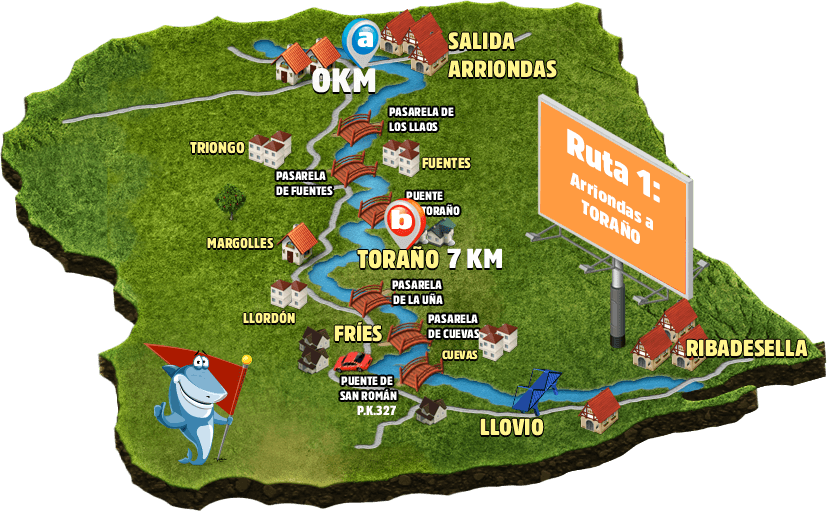
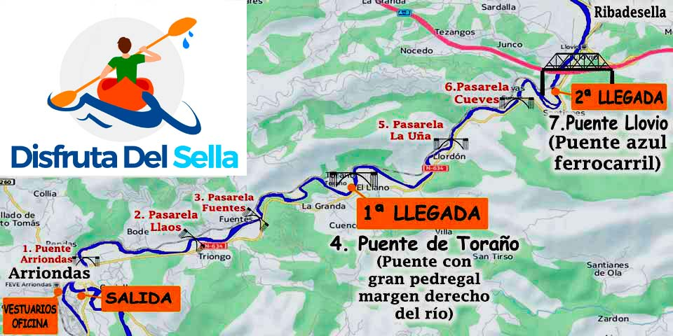

El Sella en Cifras: Historia y Leyenda
El corazón de Asturias late al ritmo del Sella.
El Descenso Internacional del Sella, conocido como *Les Piragües*, es mucho más que un evento deportivo; es una tradición anual desde 1930. Nuestro recorrido recreativo te sumerge en esa misma leyenda, llevándote por los paisajes más emblemáticos del Oriente de Asturias.
Las tranquilas aguas del Ríu Sella discurren desde los majestuosos Picos de Europa hasta el Cantábrico, siendo un eje cultural que ha moldeado la vida en Arriondas y Ribadesella durante siglos. Esta es tu oportunidad de formar parte de su historia.
Recorrido de la Aventura
 La ruta recreativa comienza en Arriondas y te ofrece 15 km de naturaleza asturiana.
Nuestros Paquetes: Calidad Premium al Mejor Precio
Aventura Estándar
- Equipo Completo (Estándar)
- Transporte Ida/Vuelta (Punto Fijo)
- Curso de Paleado Básico
- Picnic Incluido
Experiencia Premium
- Equipo **Alta Gama** (Fibra)
- Transporte con alta frecuencia
- **Picnic Completo** Incluido
- Acceso a Base Climatizada
Paquete Familiar (4+)
- Equipo Completo
- Transporte sin esperas
- Regalo sorpresa para los peques
- Picnic Incluido
Mapa del Recorrido: Arriondas a Ribadesella
El recorrido oficial de la competición es de **20 km**, desde Arriondas hasta la meta en Ribadesella. Para el descenso turístico, ofrecemos rutas de **7 km** (corta) o **15 km** (larga), adaptándonos a tu tiempo y condición física.
Distancias Turísticas: 7 km (2-3 h) o 15 km (4-5 h).
Preguntas Frecuentes: Todo lo que Necesitas Saber
¿Necesito experiencia previa para hacer el descenso?
No, el descenso recreativo es apto para principiantes. Nuestro equipo te dará un breve curso de paleo básico antes de empezar. Solo necesitas saber nadar.
¿Cuál es la edad mínima para participar?
La edad mínima recomendada es de 5 años, siempre y cuando el menor sepa nadar. Los niños deben ir acompañados por un adulto en el mismo kayak.
¿Qué pasa si el tiempo es malo?
La actividad se realiza incluso con lluvia ligera, ya que vas a mojarte de todas formas. Solo se cancela en caso de crecida extrema del río o alerta meteorológica. En ese caso, te ofrecemos un cambio de fecha o el reembolso total.